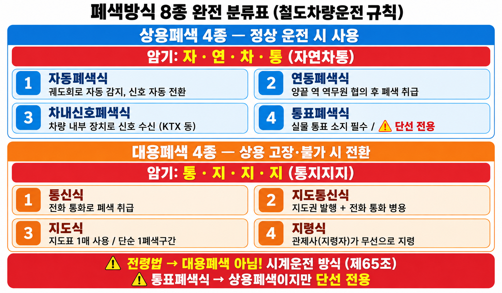
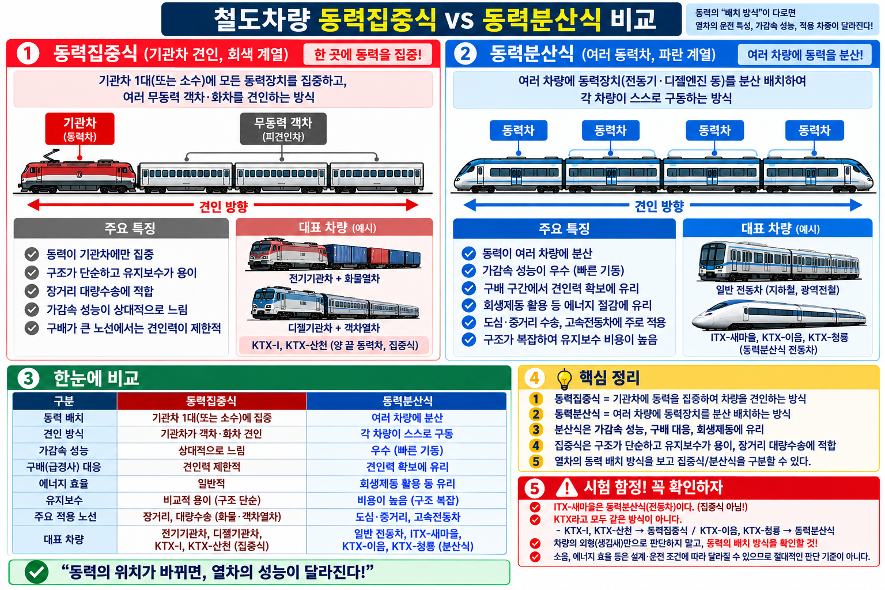

✅ 최종 체크리스트
PART 1. 철도차량운전규칙 — 기본 규정▼
C-01기본 용어 정의
| 용어 | 정의 |
|---|---|
| 정거장 | 여객 승강, 화물 적하, 열차 조성, 교행·대피 장소 |
| 본선 | 열차 운전에 상용하는 선로 |
| 측선 | 본선이 아닌 선로 |
| 완급차 | 관통제동기용 제동통·압력계·차장변·수제동기 장치 차량 |
| 조차장 | 차량의 입환·열차 조성을 위해 사용하는 장소 |
| 구내운전 | 정거장·차량기지 내 입환신호에 따른 운전 |
| 무인운전 | 사람이 열차 안에서 직접 운전 안 함 → 관제실 원격조종 |
완급차 구성 암기: "제압차수" (제동통+압력계+차장변+수제동기)
C-02동력차 연결 위치 + 열차 안전 확보
동력차 원칙: 열차 맨 앞 연결
예외: ① 기관차 2개 이상·맨 앞에서 제어 ② 보조기관차 ③ 선로·열차 고장
④ 구원·제설·공사·시험운전열차 ⑤ 정거장↔측선 운전 ⑥ 기타 특별 사유
예외: ① 기관차 2개 이상·맨 앞에서 제어 ② 보조기관차 ③ 선로·열차 고장
④ 구원·제설·공사·시험운전열차 ⑤ 정거장↔측선 운전 ⑥ 기타 특별 사유
열차 안전 확보 3가지: 폐색 / 열차제어장치 / 시계운전
C-03여객열차 연결제한
원칙: 여객열차에 화차 연결 금지 (예외: 회송 또는 특별 사유)
제한사항:
• 화차 연결 시 객차 중간에 연결 금지 (앞·뒤에만 가능)
• 파손차량, 무동력기관차, 2량 이상에 무게 부담한 화차 → 여객열차 연결 금지
제한사항:
• 화차 연결 시 객차 중간에 연결 금지 (앞·뒤에만 가능)
• 파손차량, 무동력기관차, 2량 이상에 무게 부담한 화차 → 여객열차 연결 금지
여객열차에 동력기관차 연결 금지 ❌ → 동력기관차는 연결 가능
C-04동시 진출입 기준 ★★★

열차 동시진출입 여유거리 기준 (VIS-064)
| 조건 | 기준 |
|---|---|
| 다른 방향 진입 — 일반열차 | 200m 이상 (출발신호기·정차위치로부터) |
| 다른 방향 진입 — 동차·전동차 | 150m 이상 (출발신호기·정차위치로부터) |
| 동일 방향 진입 | 100m 이상 (각 정차위치에서) |
동차·전동차 150m ↔ 동일방향 100m 숫자 교체 함정 주의!
예외: 안전측선 설치 / 서행유도 / 단행기관차 운행
C-05퇴행운전 · 정거장 외 정차
| 항목 | 원칙 | 예외 |
|---|---|---|
| 퇴행운전 | 불가 | 선로·전차선로·차량 고장 / 구원·제설·공사열차 / 보조기관차 / 특별 사유 |
| 정거장 외 정차 | 금지 | 1/30 이상 급경사 진입 전 / 정지신호 / 철도사고 발생·우려 / 안전상 부득이 |
정거장 외 정차 예외 ≠ 분기기 제한속도 초과 운행
PART 2. 폐색방식 ★★★▼
C-06폐색방식 전체 분류

폐색방식 8종 분류표 (VIS-061)
| 구분 | 방식 (4종) | 암기 |
|---|---|---|
| 상용폐색 | 자동폐색식 / 연동폐색식 / 차내신호폐색식 / 통표폐색식 | 자연차통 |
| 대용폐색 | 통신식 / 지도통신식 / 지도식 / 지령식 | 통지지지 |
C-07각 폐색방식 핵심 포인트
| 폐색방식 | 핵심 내용 |
|---|---|
| 자동폐색 | 열차/차량 있을 때, 선로전환기 불량, 장치 고장 → 자동 정지신호 |
| 연동폐색 | 양끝 정거장·신호소 협동 / 통과 전 표시 변경 불가 / 단선구간: 반대방향 자동 정지 |
| 차내신호폐색 | 차량 내부에 신호 표시 / 지상장치 고장 시 자동 정지 |
| 통표폐색 | 해당 구간 통표 1개만 사용 / 단선 전용 ★ |
| 통신식 | 전용 통신설비 원칙 / 관제업무종사자 또는 운전취급담당자 승인 |
| 지도통신식 | 1구간 1매의 지도표 / 지도권은 지도표 있는 역 협의 후 발행 |
| 지도식 | 단순 1폐색구간 / 지도표 1매 |
| 지령식 | ① 관제 감시 가능 + ② 통신장치 정상 → 관제 승인으로 시행 |
통표폐색식 = 단선 전용 / '복선 사용 가능' 함정 주의!
C-08지도표 vs 지도권 기입사항 ★★★
| 항목 | 기입사항 |
|---|---|
| 지도표 | 구간 양끝 정거장명 + 발행일자 + 사용열차번호 |
| 지도권 | 사용구간 + 사용열차 + 발행일자 + 지도표 번호 |
지도표에 기관사 이름 기입 ❌ → 포함되지 않음
C-09시계운전 방식
| 구분 | 방식 |
|---|---|
| 복선운전 | 격시법, 전령법 |
| 단선운전 | 지도격시법, 전령법 |
복선=격시+전령 / 단선=지도격시+전령 (지도격시는 단선 전용)
PART 3. 신호기 체계 ★★★▼
C-10상치신호기 분류
| 분류 | 신호기 (암기) |
|---|---|
| 주신호기 | 장내 / 출발 / 폐색 / 엄호 / 유도 / 입환 — 암기: "장출폐엄유입" |
| 종속신호기 | 원방 / 통과 / 중계 — 암기: "원통중" |
| 신호부속기 | 진로표시기 / 진로예고기 / 진로개통표시기 |
C-11신호기 기본원칙 (정위) ★★★

신호기 정위 비교 암기카드 (VIS-062)
| 신호기 | 기본 현시 (정위) |
|---|---|
| 장내신호기 | 정지신호 |
| 출발신호기 | 정지신호 |
| 폐색신호기 (자동폐색 제외) | 정지신호 |
| 엄호신호기 | 정지신호 |
| 입환신호기 | 정지신호 |
| 유도신호기 | 신호를 현시하지 아니한다 |
| 원방신호기 | 주의신호 |
| 자동폐색신호기 | 진행신호 (단선구간은 정지신호) |
| 차내신호 | 진행신호 |
유도신호기 기본 = 정지신호 ❌ → 현시없음 (정지 아님!)
원방신호기 기본 = 진행신호 ❌ → 주의신호
C-12신호현시 방식 (색등식)
| 현시 | 신호 종류 | 색 |
|---|---|---|
| 5현시 | 정지·경계·주의·감속·진행 | 적·황황·황·황녹·녹 |
| 4현시 | 정지·주의·감속·진행 | 적·황·황녹·녹 |
| 3현시 | 정지·주의·진행 | 적·황·녹 |
| 2현시 | 정지·진행 | 적·녹 |
C-13수신호 현시방법
| 신호 | 주간 | 야간 |
|---|---|---|
| 정지신호 | 적색기 (없으면 양팔 높이 들거나 녹색기 외 급히 흔듦) | 적색등 (없으면 녹색등 외 급히 흔듦) |
| 서행신호 | 적색기+녹색기 모아쥐고 머리 위 교차 | 깜박이는 녹색등 |
| 진행신호 | 녹색기 (없으면 한 팔 높이 듦) | 녹색등 |
수신호에 감속신호 있음 ❌ → 수신호 = 정지·서행·진행 3종뿐
C-14임시신호기 3종 ★★★

임시신호기 3종 비교표 (VIS-066)
| 종류 | 역할 | 주간 현시 | 야간 현시 |
|---|---|---|---|
| 서행신호기 | 해당 구간 서행 지시 | 백색테두리+등황색 원판 | 등황색등 |
| 서행예고신호기 | 전방 서행 예고 | 흑색삼각형 3개+백색삼각형 | 흑색삼각형 3개+백색등 |
| 서행해제신호기 | 서행 구역 진출 | 백색테두리+녹색 원판 | 녹색등 |
서행해제신호기 주간 = 백색원판 ❌ → 녹색 원판
C-15입환전호 ★★★

입환전호 비교카드 (VIS-063)
| 전호 | 주간 | 야간 |
|---|---|---|
| 오너라전호 (=접근전호) | 녹색기 좌우로 흔듦 | 녹색등 좌우 |
| 가거라전호 (=퇴거전호) | 녹색기 위아래로 흔듦 | 녹색등 상하 |
| 정지전호 | 적색기 | 적색등 |
오너라=상하, 가거라=좌우 ❌ → 오너라=좌우, 가거라=상하 (반대 함정!)
도시철도: 오너라=접근전호 / 가거라=퇴거전호 (동작 동일)
C-16제한신호 추정 원칙
1. 신호 현시 없거나 불명확 → 정지신호로 간주
2. 상치신호기 vs 수신호 다를 때 → 더 제한하는 쪽(수신호) 적용
단, 사전에 통보가 있으면 → 통보된 신호에 따름
2. 상치신호기 vs 수신호 다를 때 → 더 제한하는 쪽(수신호) 적용
단, 사전에 통보가 있으면 → 통보된 신호에 따름
사전통보 있어도 정지신호로 간주 ❌ → 통보된 신호에 따름
PART 4. 열차제어장치 (ATS·ATC·ATP) ★★★▼
C-17열차제어장치 분류
| 장치 | 명칭 | 기능 |
|---|---|---|
| ATS | 열차자동정지장치 | 지상 신호기 허용속도 초과 시 자동 정지 |
| ATC | 열차자동제어장치 | 운행조건에 맞게 자동 감속·정지, 속도 실시간 표시 |
| ATP | 열차자동방호장치 | ATC 기능 + 필요 시 자동제동으로 목표지점 정지 |
ATS→정지만 / ATC→감속+정지+속도표시 / ATP→ATC+자동제동
PART 5. 도시철도운전규칙 ★★▼
C-18주요 정의 비교 — 공작물 vs 인공구조물
| 규칙 | 전차선로 정의 |
|---|---|
| 철도차량운전규칙 | 전차선 및 이를 지지하는 공작물 |
| 도시철도운전규칙 | 전차선 및 이를 지지하는 인공구조물 |
도시철도에서도 "공작물" ❌ → 도시철도 = 인공구조물
C-19점검 주기 ★★★
| 설비 | 점검 주기 |
|---|---|
| 선로 | 매일 1회 이상 순회점검 |
| 전차선로 | 매일 1회 이상 순회점검 |
| 통신설비 | 일정한 주기 |
| 운전보안장치 | 일정한 주기 |
운전보안장치 매일 점검 ❌ → 매일은 선로·전차선로만
C-20비상제동거리 ★★★
도시철도 비상제동거리 = 600미터 이하
비상제동거리 400m ❌ → 600m
C-21수신호 위치 비교 ★★★
| 규칙 | 선로 지장 시 정지수신호 위치 |
|---|---|
| 철도차량운전규칙 | 사고지점으로부터 200m 이상 |
| 도시철도운전규칙 | 지장지점으로부터 100m 이상 |
도시철도 수신호 200m 이상 ❌ → 100m 이상
C-22신설·개조 후 시험운전 + 대용폐색
| 항목 | 내용 |
|---|---|
| 시험운전 기간 | 선로·전차선·보안장치 신설·개조 후 1개월 이상 시험운전 |
| 기간 단축 | 운행 중 구간 확장·이설은 전문가 안전진단 후 단축 가능 |
| 도시철도 대용폐색 | 폐색장치·차내신호장치 고장 → 관제사(관제업무종사자)가 지령식으로 폐색구간 열차 진입 지시 |
PART 6. 운전이론 ★★▼
C-23제동 종류
| 제동 방식 | 특징 |
|---|---|
| 공기제동 | 기본 제동 방식 |
| 발전제동 | 견인전동기→발전기 변환, 저항기에 열로 소모 / 단점: 전기회로 복잡, 속도 저하 시 제동력 약화 |
| 회생제동 | 발생 전기를 전원계통에 반환 (에너지 절약) |
| 수용제동 | 전기를 전차선으로 반환 |
자연제동 ❌ → 정식 제동방식 없음
발전제동 단점: ① 전기회로 복잡 ② 속도 저하 시 제동력 약화
C-24동력집중식 vs 동력분산식 ★★★

동력집중식 vs 동력분산식 비교 (VIS-065)
| 구분 | 특징 | 해당 차량 |
|---|---|---|
| 동력집중식 | 소음 큼, 유지보수 간단, 효율 낮음, 장거리 대량수송 적합, 가속력 떨어짐 | 전기기관차, 디젤기관차가 견인하는 열차 |
| 동력분산식 | 소음 적음, 가속성능 우수, 에너지 효율 높음 | 전기동차, 디젤동차, ITX 열차계열 |
ITX-새마을 = 동력집중식 ❌ → 동력분산식
C-25관절대차 · 고정축거
| 항목 | 내용 |
|---|---|
| 관절대차 | 두 차량이 하나의 대차 공유 / 곡선통과 성능 우수, 승차감 향상 / 단점: 구조 복잡, 중량 늘어남 |
| 고정축거 | 한 대차 내 양 차축 중심 사이의 거리 / 짧게 하면 → 곡선통과 원활 |
관절대차 단점 = 곡선통과 불량 ❌ → 곡선통과는 오히려 우수
C-26공주거리 · 제동거리 계산 ★★
| 항목 | 계산식 |
|---|---|
| 공주거리 | 초기속도 × 공주시간 |
| 실제동거리 | 전제동거리 - 공주거리 |
| 전제동거리 | 열차가 정지할 때까지 이동한 전체 거리 |
예) 제동초속도 20m/s, 공주시간 3초 → 공주거리 = 20 × 3 = 60m
C-27피뢰기 · 운행도표
| 항목 | 내용 |
|---|---|
| 피뢰기 | 낙뢰·서지 등 이상전압을 접지로 방전 → 전차선·전기설비 보호 |
| 운행도표 종류 | 1시간목 / 10분목 / 2분목 / 1분목 (30분목 없음!) |
운행도표 "30분목" ❌ → 없는 것